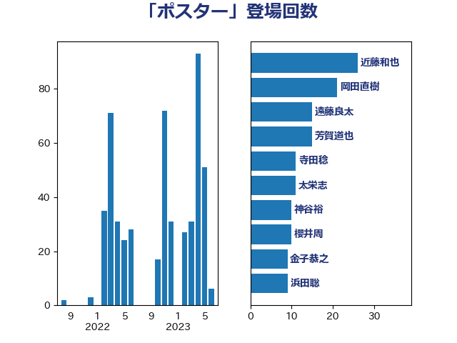

単語「ポスター」

| 近藤和也 | 立憲民主党 | 26 回 |
| 岡田直樹 | 自由民主党 | 21 回 |
| 遠藤良太 | 日本維新の会 | 15 回 |
| 芳賀道也 | 国民民主党 | 15 回 |
| 寺田稔 | 自由民主党 | 11 回 |
| 太栄志 | 立憲民主党 | 11 回 |
| 神谷裕 | 立憲民主党 | 10 回 |
| 櫻井周 | 立憲民主党 | 10 回 |
| 金子恭之 | 自由民主党 | 9 回 |
| 浜田聡 | NHK党 | 9 回 |
| 大河原まさこ | 立憲民主党 | 9 回 |
| 逢沢一郎 | 自由民主党 | 8 回 |
| 河野太郎 | 自由民主党 | 8 回 |
| 塩川鉄也 | 日本共産党 | 8 回 |
| 加藤竜祥 | 自由民主党 | 8 回 |
| 早坂敦 | 日本維新の会 | 7 回 |
| 鳩山二郎 | 自由民主党 | 6 回 |
| 高木真理 | 立憲民主党 | 6 回 |
| 藤井比早之 | 自由民主党 | 6 回 |
| 橘慶一郎 | 自由民主党 | 6 回 |
| 松本剛明 | 自由民主党 | 6 回 |
| 早稲田ゆき | 立憲民主党 | 6 回 |
| 田村まみ | 国民民主党 | 5 回 |
| 渡辺創 | 立憲民主党 | 5 回 |
| 斉藤鉄夫 | 公明党 | 5 回 |
| 宮本岳志 | 日本共産党 | 5 回 |
| 塩村あやか | 立憲民主党 | 5 回 |
| 高橋千鶴子 | 日本共産党 | 4 回 |
| 福島みずほ | 社会民主党 | 4 回 |
| 森山浩行 | 立憲民主党 | 4 回 |
| 梅村聡 | 日本維新の会 | 4 回 |
| 柚木道義 | 立憲民主党 | 4 回 |
| 後藤祐一 | 立憲民主党 | 4 回 |
| 岩谷良平 | 日本維新の会 | 4 回 |
| 加藤勝信 | 自由民主党 | 4 回 |
| 浦野靖人 | 日本維新の会 | 3 回 |
| 榛葉賀津也 | 国民民主党 | 3 回 |
| 木原誠二 | 自由民主党 | 3 回 |
| 後藤茂之 | 自由民主党 | 3 回 |
| 吉田とも代 | 日本維新の会 | 3 回 |
| 伊藤孝江 | 公明党 | 3 回 |
| 齋藤健 | 自由民主党 | 2 回 |
| 青山大人 | 立憲民主党 | 2 回 |
| 礒崎哲史 | 国民民主党 | 2 回 |
| 浜田靖一 | 自由民主党 | 2 回 |
| 沢田良 | 日本維新の会 | 2 回 |
| 永岡桂子 | 自由民主党 | 2 回 |
| 横山信一 | 公明党 | 2 回 |
| 打越さく良 | 立憲民主党 | 2 回 |
| 岸田文雄 | 自由民主党 | 2 回 |
| 岩渕友 | 日本共産党 | 2 回 |
| 岡本あき子 | 立憲民主党 | 2 回 |
| 小倉將信 | 自由民主党 | 2 回 |
| 寺田学 | 立憲民主党 | 2 回 |
| 奥野総一郎 | 立憲民主党 | 2 回 |
| 佐藤英道 | 公明党 | 2 回 |
| 伊佐進一 | 公明党 | 2 回 |
| 鰐淵洋子 | 公明党 | 1 回 |
| 高木宏壽 | 自由民主党 | 1 回 |
| 高木かおり | 日本維新の会 | 1 回 |
| 青柳陽一郎 | 立憲民主党 | 1 回 |
| 長浜博行 | 無所属 | 1 回 |
| 鈴木敦 | 国民民主党 | 1 回 |
| 野村哲郎 | 自由民主党 | 1 回 |
| 西岡秀子 | 国民民主党 | 1 回 |
| 萩生田光一 | 自由民主党 | 1 回 |
| 舟山康江 | 国民民主党 | 1 回 |
| 臼井正一 | 自由民主党 | 1 回 |
| 稲富修二 | 立憲民主党 | 1 回 |
| 秋葉賢也 | 自由民主党 | 1 回 |
| 田野瀬太道 | 無所属 | 1 回 |
| 田畑裕明 | 自由民主党 | 1 回 |
| 田村智子 | 日本共産党 | 1 回 |
| 田村憲久 | 自由民主党 | 1 回 |
| 田中健 | 国民民主党 | 1 回 |
| 猪瀬直樹 | 日本維新の会 | 1 回 |
| 源馬謙太郎 | 立憲民主党 | 1 回 |
| 浮島智子 | 公明党 | 1 回 |
| 村田享子 | 立憲民主党 | 1 回 |
| 杉久武 | 公明党 | 1 回 |
| 本庄知史 | 立憲民主党 | 1 回 |
| 斎藤アレックス | 国民民主党 | 1 回 |
| 平口洋 | 自由民主党 | 1 回 |
| 市村浩一郎 | 日本維新の会 | 1 回 |
| 川田龍平 | 立憲民主党 | 1 回 |
| 岸真紀子 | 立憲民主党 | 1 回 |
| 山本剛正 | 日本維新の会 | 1 回 |
| 山岸一生 | 立憲民主党 | 1 回 |
| 山井和則 | 立憲民主党 | 1 回 |
| 尾身朝子 | 自由民主党 | 1 回 |
| 小野田紀美 | 自由民主党 | 1 回 |
| 小泉進次郎 | 自由民主党 | 1 回 |
| 小沢雅仁 | 立憲民主党 | 1 回 |
| 宮路拓馬 | 自由民主党 | 1 回 |
| 宮崎雅夫 | 自由民主党 | 1 回 |
| 宮口治子 | 立憲民主党 | 1 回 |
| 大西健介 | 立憲民主党 | 1 回 |
| 堀場幸子 | 日本維新の会 | 1 回 |
| 堀内詔子 | 自由民主党 | 1 回 |
| 吉良よし子 | 日本共産党 | 1 回 |
| 古賀之士 | 立憲民主党 | 1 回 |
| 古川禎久 | 自由民主党 | 1 回 |
| 古川元久 | 国民民主党 | 1 回 |
| 住吉寛紀 | 日本維新の会 | 1 回 |
| 伊藤渉 | 公明党 | 1 回 |
| 伊藤孝恵 | 国民民主党 | 1 回 |
| 井上哲士 | 日本共産党 | 1 回 |
| 中野英幸 | 自由民主党 | 1 回 |
| たがや亮 | れいわ新選組 | 1 回 |
| おおつき紅葉 | 立憲民主党 | 1 回 |